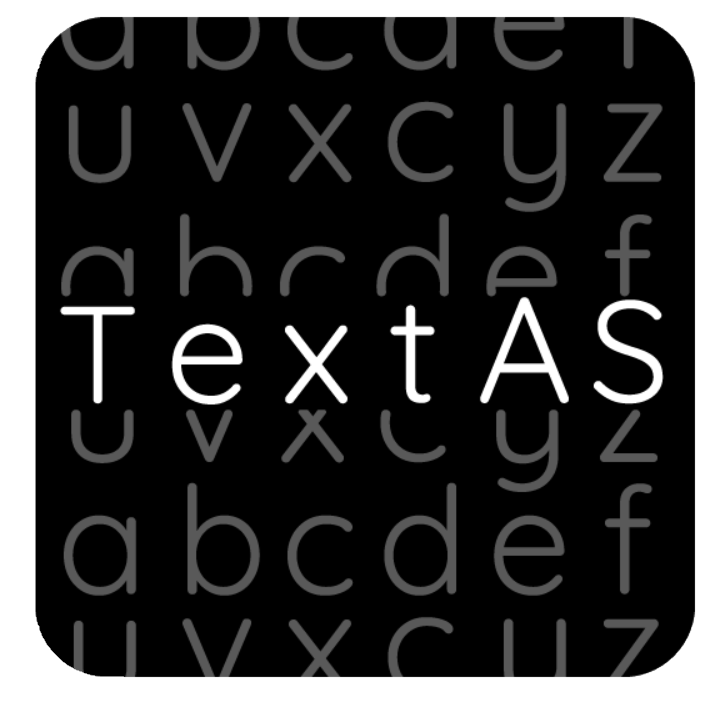

TextAS
Essence of Text. One Tap Away.

Start
New File
Open Folder
Add Workspace Folder
Recent
No recent folders
Documentation
Documents
User's Guide
Hands-On Experience
GitHub Repository
Tips and Tricks
Product Documentation
Show welcome page on startup